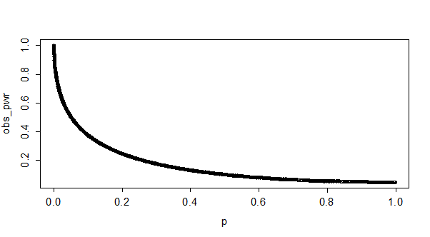
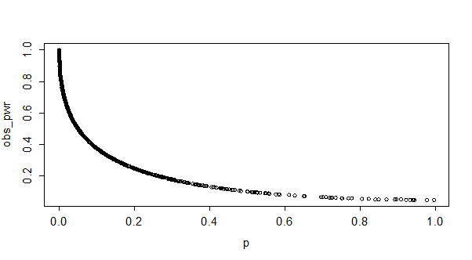
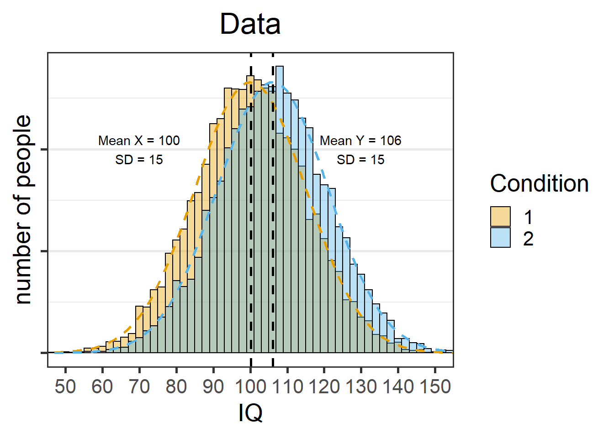
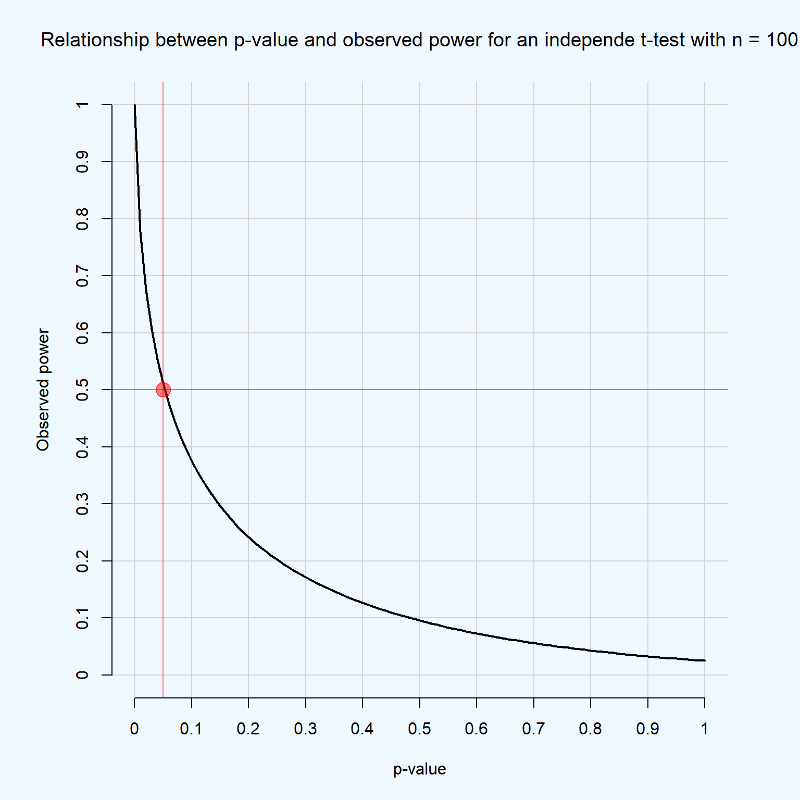
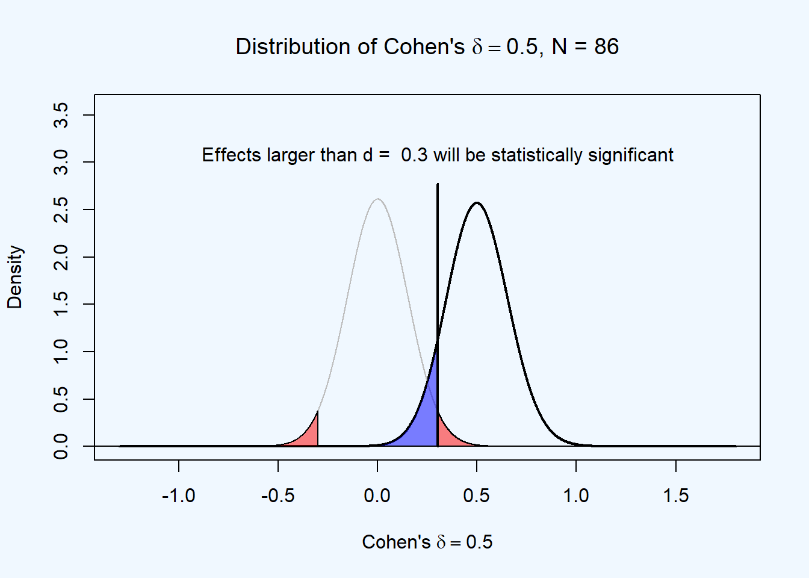
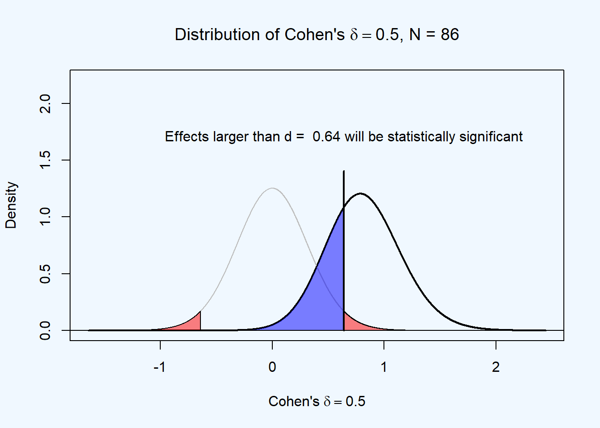

What is power analysis?
1.5 Statistical power and Type 2 error rates
Statistical power is the probability of a test to yield a statistically significant result (Aberson 2019; Cohen 1988). Power depends on the Type 1 error rate (α), the true effect size in the population, and the number of observations. Because the true effect size is typically unknown, it makes most sense to speak about the power function. In the figure below, you see a power curve for an independent t-test, with an alpha level of 0.05. We see that as the effect size (in Cohen’s d) increases, power increases. If the effect you study has an effect size of 0.5, you would have almost 70% power with 50 observations in each independent group (indicated by the red dot). If the true effect size is smaller, power is lower, and as the effect size is larger, power is larger.
 Figure 1.5: Power curve for an independent t-test as a function of the true effect size.
Figure 1.5: Power curve for an independent t-test as a function of the true effect size.
When designing a study where the goal is to observe a statistically significant effect, researchers often want to make sure they have enough power to detect effects they expect or are interested in observing. This is done by performing an a-priori power analysis. The true effect size is what it is, so if researchers want to increase the statistical power of their test, they either have to increase the alpha level, or increase the number of observations. In the figure below you see how the statistical power increases as the number of observations (per group) in an independent t-test with an alpha level of 0.05 increases.
 Figure 1.6: Power curve for an independent t-test as a function of the sample size.
Figure 1.6: Power curve for an independent t-test as a function of the sample size.
1.5.1 Types of power analysis
In an a-priori power analysis one uses the effect size, desired power, and alpha level to compute the required sample size. If we plan to perform a two-sided t-test, want to have 90% power for an effect size of d = 0.5, given an alpha level of 0.01, we will need a sample size of 121 in each independent group.
power.t.test(delta = 0.5,
sig.level = 0.01,
power = 0.9,
type = "two.sample",
alternative = "two.sided")##
## Two-sample t test power calculation
##
## n = 120.7055
## delta = 0.5
## sd = 1
## sig.level = 0.01
## power = 0.9
## alternative = two.sided
##
## NOTE: n is number in *each* groupSometimes the sample size you can collect is fixed. In that case you can perform a sensitivity power analysis to examine the effect sizes you can detect with a desired power. If we plan to perform a two-sided t-test, and can collect at most 70 observations in each independent group, and we want to have 90% power, given an alpha level of 0.01, we only have 90% power for effects of d = 0.66. We could still get lucky find a significant effect if the population effect size is smaller than 0.66, but we would no longer control our Type 2 error rate (1-power) at 10%.
##
## Two-sample t test power calculation
##
## n = 70
## delta = 0.6599737
## sd = 1
## sig.level = 0.01
## power = 0.9
## alternative = two.sided
##
## NOTE: n is number in *each* groupIn a criterion power analysis one computes the alpha level one should choose to achieve a desired power, given a sample size and an expectation of the population effect size. If we plan to perform a two-sided t-test, and can collect at most 70 observations in each independent group, and we want to have 90% power, and expect a population effect size of 0.5, we would need to set the alpha level to 0.0966. We can use a lower alpha level, but then our power would be smaller. If we assume we can not increase our number of observations beyond 70 per group, we need to make a trade-off between increasing our Type 1 error rate, or our Type 2 error rate. As Neyman and Pearson Neyman and Pearson (1933) write: “The use of these statistical tools in any given case, in determining just how the balance should be struck, must be left to the investigator.”
power.t.test(n = 70,
delta = 0.5,
sig.level = NULL,
power = 0.9,
type = "two.sample",
alternative = "two.sided")##
## Two-sample t test power calculation
##
## n = 70
## delta = 0.5
## sd = 1
## sig.level = 0.09656667
## power = 0.9
## alternative = two.sided
##
## NOTE: n is number in *each* groupNote that power calculations are performed under the assumption that there is an effect. In practice, it is of course also possible that there is no effect, or d = 0. In that case, regardless of the sample size, you will observe significance results at your chosen alpha level.
Therefore, probability of observing a significant or non-significant result in a study depends on the Type 1 error rate (α), the statistical power of the test (1-β), and the probability that the null-hypothesis is true. A study might examine a true effect, which means the alternative hypothesis (H1) is true (e.g., a correlation that differs from zero) or it might examine a null effect, which means the null-hypothesis (H0) is true (e.g., a correlation that is zero). When performing a statistical test on data, the test result might be statistically significant at a specified alpha level (p < α) or not. Thus, there are four possible outcomes of a study:
- False positives or Type 1 errors (you observe a significant test result when H0 is true)
- False negatives or Type 2 errors (you observe a non-significant result when H1 is true)
- True negatives (a non-significant result when H0 is true)
- True positives (a significant test result when H1 is true)
 Figure 1.7: Four possible outcomes in a null hypothesis significance test.
Figure 1.7: Four possible outcomes in a null hypothesis significance test.
The goal of an a-priori power analysis is to increase the sample size up to the level that the desired power is achieved for an effect size one is interested in detecting, but one should always consider the possibility that the effect size is 0. In practice, one can design a study assuming both the presence and the absence of an effect by performing an a-priori power analysis for a null-hypothesis significance test, assuming there is an effect, and an a-priori power analysis for an equivalence test, assuming the true effect size is 0. We will demonstrate some practical examples in the next sections.
1.6 How to justify your sample size based on a power analysis.
One challenge in power analysis is that you never know the true effect size. This leads to the ‘sample size samba’ (Schulz and Grimes 2005). Researchers go back and forth between the effect size they expect, and the sample size they are willing to collect, until they ‘expect’ the effect size that, in an a-priori power analysis, leads to the sample size they are willing to collect. This practice obviously makes a power analysis a useless procedure.
One might be tempted to perform a small power analysis to estimate the effect size, and use this effect size estimate in an a-priori power analysis. Regrettably, this is not a recommended solution. First, effect size estimates from small pilot studies are highly uncertain , which means the estimate can easily be much smaller or larger than the population effect size (which can be seen by the width of the confidence interval around the effect size estimate). Second, such a procedure inevitably leads to bias, because you will only perform studies when the pilot provided an effect size estimates that, when entered in an a-priori power analysis, yielded a sample size that was feasible to collect. Since you only follow up on pilot studies when the effect size estimate is sufficiently large, this inevitably leads to ‘follow-up bias’
What can be done? The recommended best practice is to not enter the effect size you expect, but the smallest effect size you would still be interested in. By doing this, you will be able to design a study that has sufficient power for the smallest effect you find worthwhile to observe, even when you do not know what the true effect size is. By determining the required sample size for the smallest effect size of interest, you can guarantee you have designed an informative study. However, in case the true effect size is larger than your smallest effect size of interest, you might collect many more participants than required. This can be solved by performing sequential analyses, where you analyze the data intermittently, while controlling the Type 1 error rate for multiple looks at the data. We will explain sequential analyses later.
1.7 Observed power, and what to do if your editor asks for post-hoc power analyses
Observed power (or post-hoc power) is the statistical power of the test you have performed, based on the effect size estimate from your data. Statistical power is the probability of finding a statistical difference from 0 in your test (aka a ‘significant effect’), if there is a true difference to be found. Observed power differs from the true power of your test, because the true power depends on the true effect size you are examining. However, the true effect size is typically unknown, and therefore it is tempting to treat post-hoc power as if it is similar to the true power of your study. In this blog, I will explain why you should never calculate the observed power (except for blogs about why you should not use observed power). Observed power is a useless statistical concept, and at the end of the post, I’ll give a suggestion how to respond to editors who ask for post-hoc power analyses.
Observed (or post-hoc) power and p-values are directly related. Below, you can see a plot of observed p-values and observed power for 10000 simulated studies with approximately 50% power (the R code is included below). It looks like a curve, but the graph is basically a scatter plot of a large number of single observations that fall on a curve expressing the relation between observed power and p-values.
Figure 1.8: Distribution of p-values plotted against observed power with low power.
Below, you see a plot of p-values and observed power for 10000 simulated studies with approximately 90% power. Yes, that is exactly the same curve these observations fall on. The only difference is how often we actually observe high p-values (or have low observed power). You can see there are only a few observations with high p-values if we have high power (compared to medium power), but the curve stays exactly the same. I hope these two figures drive home the point of what it means that p-values and observed power are directly related: it means that you can directly convert your p-value to the observed power, regardless of your sample size or effect size.
Figure 1.9: Distribution of p-values plotted against observed power with high power.
Let’s draw a vertical line at p = 0.05, and a horizontal line at 50% observed power. We can see below that the two lines meet exactly at the line visualizing the relationship between p-values and observed power. This means that anytime you observed a p-value of p = 0.05 in your data, your observed power will be 50% (in infinite sample sizes, in t-tests - Jake Westfall pointed me to this paper showing the values at smaller samples, and for F-tests with different degrees of freedom).
 Figure 1.10: Distribution of p-values plotted against observed power showing the correspondence of p = 0.05 and 50% power.
Figure 1.10: Distribution of p-values plotted against observed power showing the correspondence of p = 0.05 and 50% power.
I noticed these facts about the relationship between observed power and p-values while playing around with simulated studies in R, but they are also explained in Hoenig& Heisey, 2001.
Some estimates (e.g., Cohen, 1962) put the average power of studies in psychology at 50%. What observed power can you expect, when you perform a lot of studies which have a true power of 50%? We know that the p-values we can expect should be split down the middle, with 50% being smaller than p = 0.05, and 50% being larger than p = 0.05. The graph below gives the p-value distribution for 100000 simulated independent t-tests:
The bar on the left are all (50.000 out of 100.000) test results with a p < 0.05. The observed power distribution is displayed below:
It is clear you can expect just about any observed power when the true power of your experiment is 50%. The distribution of observed power changes from positively skewed to negatively skewed as the true power increases (from 0 to 1), and when power is around 50% we observe a tipping point where there is a switch from a negatively skewed distribution to a positively skewed distribution. With slightly more power (e.g., 56%) the distribution becomes somewhat U-shaped, as can be seen in the figure below. I’m sure a mathematical statistician can explain the why and how of this distribution in more detail, but here I just wanted to show what it looks like, because I don’t know of any other sources of information where this distribution is reported (thanks to a reader, who in the comments points out Yuan & Maxwell, 2005 also discuss observed power distributions).
Editors asking for post-hoc power analyses
Editors sometimes ask researchers to report post-hoc power analyses when authors report a test that does not reveal a statistical difference from 0, and when authors want to conclude there is no effect. In such situations, editors would like to distinguish between true negatives (concluding there is no effect, when there is no effect) and false negatives (concluding there is no effect, when there actually is an effect, or a Type 2 error). As the preceding explanation of post-hoc power hopefully illustrates, reporting post-hoc power is nothing more than reporting the p-value in a different way, and will therefore not answer the question editors want to know.
Because you will always have low observed power when you report non-significant effects, you should never perform an observed or post-hoc power analysis, even if an editor requests it (feel free to link to this blog post). Instead, you should explain how likely it was to observe a significant effect, given your sample, and given an expected or small effect size. Perhaps this expected effect size can be derived from theoretical predictions, or you can define a smallest effect size of interest (e.g., you are interested in knowing whether an effect is larger than a ‘small’ effect of d < 0.3).
For example, if you collected 500 participants in an independent t-test, and did not observe an effect, you had more than 90% power to observe a small effect of d = 0.3. It is always possible that the true effect size is even smaller, or that your conclusion that there is no effect is a Type 2 error, and you should acknowledge this. At the same time, given your sample size, and assuming a certain true effect size, it might be most probable that there is no effect.
1.8 Why Within-Subject Designs Typically Require Fewer Participants than Between-Subject Designs
One widely recommended approach to increase power is using a within subject design. Indeed, you need fewer participants to detect a mean difference between two conditions in a within-subjects design (in a dependent t-test) than in a between-subjects design (in an independent t-test). The reason is straightforward, but not always explained, and even less often expressed in the easy equation below. The sample size needed in within-designs (NW) relative to the sample needed in between-designs (NB), assuming normal distributions, is (from Maxwell & Delaney, 2004, p. 561, formula 45):
NW = NB (1-ρ)/2
The “/2” part of the equation is due to the fact that in a two-condition within design every participant provides two data-points. The extent to which this reduces the sample size compared to a between-subject design depends on the correlation between the two dependent variables, as indicated by the (1-ρ) part of the equation. If the correlation is 0, a within-subject design simply needs half as many participants as a between-subject design (e.g., 64 instead 128 participants). The higher the correlation, the larger the relative benefit of within designs, and whenever the correlation is negative (up to -1) the relative benefit disappears. Note than when the correlation is -1, you need 128 participants in a within-design and 128 participants in a between-design, but in a within-design you will need to collect two measurements from each participant, making a within design more work than a between-design. However, negative correlations between dependent variables in psychology are rare, and perfectly negative correlations will probably never occur.
So what does the correlation do so that it increases the power of within designs, or reduces the number of participants you need? Let’s see what effect the correlation has on power by simulating and plotting correlated data. In the R script below, I’m simulating two measurements of IQ scores with a specific sample size (i.e., 10000), mean (i.e., 100 vs 106), standard deviation (i.e., 15), and correlation between the two measurements. The script generates three plots.
We will start with a simulation where the correlation between measurements is 0. First, we see the two normally distributed IQ measurements, with means of 100 and 106, and standard deviations of 15 (due to the large sample size, the numbers equal the input in the simulation, although small variation might still occur).
 Figure 1.11: Distributions of two dependent groups with means 100 and 106 and a standard deviation of 15.
Figure 1.11: Distributions of two dependent groups with means 100 and 106 and a standard deviation of 15.
 Figure 1.12: Correlation between two dependent groups.
Figure 1.12: Correlation between two dependent groups.
Now, let’s look at the distribution of the mean differences. The mean difference is -6 (in line with the simulation settings), and the standard deviation is 21. This is also as expected. The standard deviation of the difference scores is √2 times as large as the standard deviation in each measurement, and indeed, 15*√2 = 21.21, which is rounded to 21. This situation where the correlation between measurements is zero equals the situation in an independent t-test, where the correlation between measurements is not taken into account.
 Figure 1.13: Distributions of difference scores between two dependent groups.
Figure 1.13: Distributions of difference scores between two dependent groups.
Now let’s increase the correlation between dependent variables to 0.7.
Nothing has changed when we plot the means:
##
## Two Sample t-test
##
## data: x and y
## t = -28.232, df = 19998, p-value < 2.2e-16
## alternative hypothesis: true difference in means is not equal to 0
## 95 percent confidence interval:
## -6.331318 -5.509260
## sample estimates:
## mean of x mean of y
## 100.1800 106.1003Figure 1.14: Distributions of two independent groups with means 100 and 106 and a standard deviation of 15.
The correlation between measurements is now strongly positive:
 Figure 1.15: Correlation between two dependent groups.
Figure 1.15: Correlation between two dependent groups.
The important difference lies in the standard deviation of the difference scores. The SD = 11 instead of 21 in the simulation above. Because the standardized effect size is the difference divided by the standard deviation, the effect size (Cohen’s dz in within designs) is larger in this test than in the test above.
 Figure 1.16: Difference scores between two dependent groups.
Figure 1.16: Difference scores between two dependent groups.
if you set the correlation to a negative value, the standard deviation of the difference scores actually increases.
I like to think of dependent variables in within-designs as dance partners. If they are well-coordinated (or highly correlated), one person steps to the left, and the other person steps to the left the same distance. If there is no coordination (or no correlation), when one dance partner steps to the left, the other dance partner is just as likely to move to the wrong direction as to the right direction. Such a dance couple will take up a lot more space on the dance floor.
You see that the correlation between dependent variables is an important aspect of within designs. I recommend explicitly reporting the correlation between dependent variables in within designs (e.g., participants responded significantly slower (M = 390, SD = 44) when they used their feet than when they used their hands (M = 371, SD = 44, r = .953), t(17) = 5.98, p < 0.001, Hedges’ g = 0.43, Mdiff = 19, 95% CI [12; 26]).
Since most dependent variables in within designs in psychology are positively correlated, within designs will greatly increase the power you can achieve given the sample size you have available. Use within-designs when possible, but weigh the benefits of higher power against the downsides of order effects or carryover effects that might be problematic in a within-subject design. Maxwell and Delaney’s book (Chapter 11) has a good discussion of this topic.
You can use this Shiny app to play around with different means, sd’s, and correlations, and see the effect of the distribution of the difference scores.
1.9 Power analysis for interactions
Based on our recent preprint explaining power analysis for ANOVA designs, in this post I want provide a step-by-step mathematical overview of power analysis for interactions. These details often do not make it into tutorial papers because of word limitations, and few good free resources are available (for a paid resource worth your money, see Maxwell, Delaney, & Kelley, 2018). This post is a bit technical, but nothing in this post requires more knowedge than multiplying and dividing numbers, and I believe that for anyone willing to really understand effect sizes and power in ANOVA designs digging in to these details will be quite beneficial. There are three take-home messages in this section.
- In power analyses for ANOVA designs, you should always think of the predicted pattern of means. Different patterns of means will have the same effect size, and your intuition can not be relied on when predicting an effect size for ANOVA designs.
- Understanding how patterns of means relate to the effect you predict is essential to design an informative study.
- Always perform a power analysis if you want to test a predicted interaction effect, and always calculate the effect size based on means, sd’s, and correlations, instead of plugging in a ‘medium’ partial eta squared.
- Crossover interaction effects have large effects and can thus be studies with high power in smaller samples, and if your theory can predict crossover interactions, such experiments might be worthwhile to design.
- There are some additional benefits of examining interactions (risky predictions, generalizability, efficiently examining multiple main effects) and it would be a shame if the field is turned away from examining interactions because they sometimes require large samples.
1.9.1 Getting started: Comparing two groups
We are planning a two independent group experiment. We are using a validated measure, and we know the standard deviation of our measure is approximately 2. Psychologists are generaly horribly bad at knowing the standard deviation of their measures, even though a very defensible position is that you are not ready to perform a power analysis without solid knowledge of the standard deviation of your measure. We are interested in observing a mean difference of 1 or more, because smaller effects would not be practically meaningful. We expect the mean in the control condition to be 0, and therefore want the mean in the intervention group to be 1 or higher.
This means the standardized effect size is the mean difference, divided by the standard deviation, or 1/2 = 0.5. This is the Cohen’s d we want to be able to detect in our study:
\[\begin{equation} d = \frac{m_1-m_2}{\sigma} = \frac{1-0}{2} = 0.5. \end{equation}\]
An independent t-test is mathematically identical to an F-test with two groups. For an F-test, the effect size used for power analyses is Cohen’s f, which is a generalization of Cohen’s d to more than two groups (Cohen, 1988). It is calculated based on the standard deviation of the population means divided by the population standard deviation which we know for our measure is 2), or:
\[\begin{equation} f = \frac{\sigma _{ m }}{\sigma} \end{equation}\] where for equal sample sizes, \[\begin{equation} \sigma _{ m } = \sqrt { \frac { \sum_ { i = 1 } ^ { k } ( m _ { i } - m ) ^ { 2 } } { k } }. \end{equation}\]
In this formula m is the grand mean, k is the number of means, and m_i is the mean in each group. The formula above might look a bit daunting, but calculating Cohen’s f is not that difficult for two groups.
If we take the expected means of 0 and 1, and a standard deviation of 2, the grand mean (the m in the formula above) is (0 + 1)/2 = 0.5. The formula says we should subtract this grand mean from the mean of each group, square this value, and sum them. So we have (0-0.5)^2 and (1-0.5)^2, which are both 0.25. We sum these values (0.25 + 0.25 = 0.5), divide them by the number of groups (0.5/2 = 0.25) and take the square root, we find that \(\sigma_{ m }\) = 0.5. We can now calculate Cohen’s f (remember than we know \(\sigma\) = 2 for our measure):
\[\begin{equation} f = \frac{\sigma _{ m }}{\sigma} = \frac{0.5}{2} = 0.25 \end{equation}\]
We see that for two groups Cohen’s f is half as large as Cohen’s d, or \(f = \frac{1}{2}d\), which always holds for an F-test with two independent groups.
Although calculating effect sizes by hand is obviously an incredibly enjoyable thing to do, you might prefer using software that performs these calculations for you. Here, I will use our Superpower power analysis package (developed by Aaron Caldwell and me). The code below uses a function from the package that computes power analytically for a one-way ANOVA where all conditions are manipulated between participants. In addition to the effect size, the function will compute power for any sample size per condition you enter. Let’s assume you have a friend who told you that they heard from someone else that you now need to use 50 observations in each condition (n = 50), so you plan to follow this trustworthy advice. We see the code below returns a Cohen’s f of 0.25, and also tells us we would have 61.78% power if we use a preregistered alpha level of 0.03.

## [1] 0.25## [1] 61.78474We therefore might want to increase our sample size for our planned study. Using the plot_power function, we can see we would pass 90% power with 100 observations per condition.

## Achieved Power and Sample Size for ANOVA-level effects
## variable label n achieved_power desired_power
## 1 a Desired Power Achieved 96 90.13 90
1.9.2 Interaction Effects
So far we have explained the basics for effect size calculations (and we have looked at statistical power) for 2 group ANOVA designs. Now we have the basis to look at interaction effects.
One of the main points in this blog post is that it is better to talk about interactions in ANOVAs in terms of the pattern of means, standard deviations, and correlations, than in terms of a standarized effect size. The reason for this is that, while for two groups a difference between means directly relates to a Cohen’s d, wildly different patterns of means in an ANOVA will have the same Cohen’s f. In my experience helping colleagues out their with power analyses for ANOVA designs, talking about effects in terms of a Cohen’s f is rarely a good place to start when thinking about what your hypothesis predicts. Instead, you need to specify the predicted pattern of means, have some knowledge about the standard deviation of your measure, and then calculate your predicted effect size.
There are two types of interactions, as visualized below. In an ordinal interaction, the mean of one group (“B1”) is always higher than the mean for the other group (“B2”). Disordinal interactions are also known as ‘cross-over’ interactions, and occur when the group with the larger mean switches over. The difference is important, since another main takeaway of this blog post is that, in two studies where the largest simple comparison has the same effect size, a study with a disordinal interaction has much higher power than a study with an ordinal interaction. Thus, if possible, you will want to design experiments where an effect in one condition flips around in the other condition, instead of an experiment where the effect in the other condition just disappears. I personally never realized this before I learned how to compute power for interactions, and never took this simple but important fact into account. Let’s see why it is important.
1.9.3 Calculating effect sizes for interactions

Mathematically the interaction effect is computed as the cell mean minus the sum of the grand mean, the marginal mean in each condition of one factor minus the grand mean, and the marginal mean in each condition for the other factor minus grand mean (see Maxwell et al., 2017).
Let’s consider two cases comparable to the figure above, one where we have a perfect disordinal interaction (the means of 0 and 1 flip around in the other condition, and are 1 and 0) or an ordinal interaction (the effect is present in one condition, with means of 0 and 1, but there is no effect in the other condition, and both means are 0). We can calcuate the interaction effect as follows. First, let’s look at the interaction in a 2x2 matrix:

## a1 a2
## b1 1 0
## b2 0 1The grand mean is (1 + 0 + 0 + 1) / 4 = 0.5.
We can compute the marginal means for A1, A2, B1, and B2, which is simply averaging per row and column, which gets us for the A1 column (1+0)/2=0.5. For this perfect disordinal interaction, all marginal means are 0.5. This means there are no main effects. There is no main effect of factor A (because the marginal means for A1 and A2 are both exactly 0.5), nor is there a main effect of B.
We can also calculate the interaction effect. For each cell we take the value in the cell (e.g., for a1b1 this is 1) and compute the difference between the cell mean and the additive effect of the two factors as:
1 - (the grand mean of 0.5 + (the marginal mean of a1 minus the grand mean, or 0.5 - 0.5 = 0) + (the marginal mean of b1 minus the grand mean, or 0.5 - 0.5 = 0)). Thus, for each cell we get:
a1b1: 1 - (0.5 + (0.5 -0.5) + (0.5 -0.5)) = 0.5
a1b2: 0 - (0.5 + (0.5 -0.5) + (0.5 -0.5)) = -0.5
a2b1: 0 - (0.5 + (0.5 -0.5) + (0.5 -0.5)) = -0.5
a2b2: 1 - (0.5 + (0.5 -0.5) + (0.5 -0.5)) = 0.5
Cohen’s \(f\) is then \(f = \frac { \sqrt { \frac { 0.5^2 +-0.5^2 + -0.5^2 + 0.5^2 } { 4 } }}{ 2 } = 0.25\)
or in R code: sqrt(((0.5)^2 +(-0.5)^2 + (-0.5)^2 + (0.5)^2)/4)/2 = 0.25.
For the ordinal interaction the grand mean is (1 + 0 + 0 + 0) / 4, or 0.25. The marginal means are a1: 0.5, a2: 0, b1: 0.5, and b2: 0.
Completing the calculation for all four cells for the ordinal interaction gives:
a1b1: 1 - (0.25 + (0.5 -0.25) + (0.5 -0.25)) = 0.25
a1b2: 0 - (0.25 + (0.5 -0.25) + (0.0 -0.25)) = -0.25
a2b1: 0 - (0.25 + (0.0 -0.25) + (0.5 -0.25)) = -0.25
a2b2: 0 - (0.25 + (0.0 -0.25) + (0.0 -0.25)) = 0.25
Cohen’s \(f\) is then \(f = \frac { \sqrt { \frac { 0.25^2 +-0.25^2 + -0.25^2 + 0.25^2 } { 4 } }}{ 2 } = 0.125\).
or in R code: sqrt(((0.25)^2 +(-0.25)^2 + (-0.25)^2 + (0.25)^2)/4)/2 = 0.125.
We see the effect size of the cross-over interaction (f = 0.25) is twice as large as the effect size of the ordinal interaction (f = 0.125).
If the math so far was a bit too much to follow, there is an easier way to think of why the effect sizes are halved. In the disordinal interaction we are comparing cells a1b1 and a2b2 against a1b2 and a2b1, or (1+1)/2 vs. (0+0)/2. Thus, if we see this as a t-test for a contrast, it is clear the mean difference is 1, as it was in the simple effect we started with. For the ordinal interaction, we have (1+0)/2 vs. (0+0)/2, so the mean difference is halved, namely 0.5.
1.9.4 Power for interactions
All of the above obviously matters for the statistical power we will have when we examine interaction effects in our experiments. Let’s use Superpower to perform power analyses for the disordinal interaction first, if we would collect 50 participants in each condition.

## Power and Effect sizes for ANOVA tests
## power partial_eta_squared cohen_f non_centrality
## a 3.000 0.00 0.0000 0.0
## b 3.000 0.00 0.0000 0.0
## a:b 91.055 0.06 0.2525 12.5
##
## Power and Effect sizes for pairwise comparisons (t-tests)
## power effect_size
## p_a_a1_b_b1_a_a1_b_b2 61.78 -0.5
## p_a_a1_b_b1_a_a2_b_b1 61.78 -0.5
## p_a_a1_b_b1_a_a2_b_b2 3.00 0.0
## p_a_a1_b_b2_a_a2_b_b1 3.00 0.0
## p_a_a1_b_b2_a_a2_b_b2 61.78 0.5
## p_a_a2_b_b1_a_a2_b_b2 61.78 0.5First let’s look at the Power and Effect size for the pairwise comparisons. Not surprisingly, these are just the same as our original t-test, given that we have 50 observations per condition, and our mean difference is either 1, or a Cohen’s d of 0.5 (in which case we have 61.78% power) or the mean difference is 0, and we have no power (because there is no true effect) but we wil observe significant results 3% of the time because we set our alpha level to 0.03.
Then, let’s look at the results for the ANOVA. Since there are no main effects in a perfect crossover interaction, we have a 3% Type 1 error rate. We see the power for the crossover interaction between factor a and b is 91.06%. This is much larger than the power for the simple effects. The reason is that the contrast that is equal to the test of the interaction is based on all 200 observations. Unlike the pairwise comparisons with 50 vs 50 observations, the contrast for the interaction has 100 vs 100 observations. Given that the effect size is the same (f = 0.25) we end up with much higher power.
If you current think it is impossible to find a statistically significant interaction without a huge sample size, you clearly see this is wrong. Power can be higher for an interaction than for the simpe effect - but this depends on the pattern of means underlying the interaction. If possible, design studies where your theory predicts a perfect crossover interaction.
For the ordinal interaction, our statistical power does not look that good based on an a-priori power analysis. Superpower tells us we have 33.99% power for the main effects and interaction (yes, we have exactly the same power for all three - if you think about the three contrasts that are tested, these have the same effect size).

## Power and Effect sizes for ANOVA tests
## power partial_eta_squared cohen_f non_centrality
## a 33.9869 0.0157 0.1263 3.125
## b 33.9869 0.0157 0.1263 3.125
## a:b 33.9869 0.0157 0.1263 3.125
##
## Power and Effect sizes for pairwise comparisons (t-tests)
## power effect_size
## p_a_a1_b_b1_a_a1_b_b2 61.78 -0.5
## p_a_a1_b_b1_a_a2_b_b1 61.78 -0.5
## p_a_a1_b_b1_a_a2_b_b2 61.78 -0.5
## p_a_a1_b_b2_a_a2_b_b1 3.00 0.0
## p_a_a1_b_b2_a_a2_b_b2 3.00 0.0
## p_a_a2_b_b1_a_a2_b_b2 3.00 0.0If you have heard people say you should be careful when designing studies predicting interaction patterns because you might have very low power, this is the type of pattern of means they are warning about. Maxwell, Delaney, and Kelley (2018) discuss why power for interactions is often smaller, and note interactions effects are often smaller in the real world, and we often examine ordinal interactions. This might be true. But in experimental psychology it might be possile to think about hypotheses that predict disordinal interactions. In addition to the fact that such predictions are often theoretically riskier and more impressive (after all, many things can make an effect go away, but without your theory it might be difficult to explain why an effect flips around) they also have larger effects and are easier to test with high power.
Some years ago other blog posts by Uri Simonsohn and Roger Giner-Sorolla did a great job in warning researchers they need large sample sizes for ordinal interactions, and my post repeats this warning. But it would be a shame if researchers would stop examining interaction effects. There are some nice benefits studying interactions, such as 1) making riskier theoretical predictions, 2) greater generalizability (if there is no interaction effect, you might show a main effect operates across different conditions of a second factor) and 3) if you want to study two main effects it is more efficient to do this in a 2x2 design than in two seperate designs (Maxwell, Delaney, & Kelley, 2018). So maybe this blog post has been able to highlight some scenarios where examining interaction effects is still beneficial.
1.10 The smallest effect size that can be statistically significant
When designing a study, you need to justify the sample size you aim to collect. If one of your goals is to observe a p-values lower than the alpha level you decided upon (e.g., 0.05), one justification for the sample size can be a power analysis. A power analysis tells you the probability of observing a statistically significant effect, based on a specific sample size, alpha level, and true effect size. At our department, people who use power as a sample size justification need to aim for 90% power if they want to get money from the department to collect data.
A power analysis is performed based on the effect size you expect to observe. When you expect an effect with a Cohen’s d of 0.5 in an independent two-tailed t-test, and you use an alpha level of 0.05, you will have 90% power with 86 participants in each group. What this means, is that only 10% of the distribution of effects sizes you can expect when d = 0.5 and n = 86 falls below the critical value required to get a p < 0.05 in an independent t-test.
In the figure below, the power analysis is visualized by plotting the distribution of Cohen’s d given 86 participants per group when the true effect size is 0 (or the null-hypothesis is true), and when d = 0.5. The blue area is the Type 2 error rate (the probability of not finding p < α, when there is a true effect, and α = 0.05).
Figure 1.17: Null and alternative distribution, assuming d = 0.5, alpha = 0.05, and N = 86 per group.
You’ve probably seen such graphs before (indeed, G*power, widely used power analysis software, provides these graphs as output). The only thing I have done is to transform the t-value distribution that is commonly used in these graphs, and calculated the distribution for Cohen’s d. This is a straightforward transformation, but instead of presenting the critical t-value the figure provides the critical d-value. I think people find it easier to interpret d than t. Only t-tests which yield a t ≥ 1.974, or a d ≥ 0.30, will be statistically significant. All effects smaller than d = 0.30 will never be statistically significant with 86 participants in each condition.
If you design a study where results will be analyzed with an independent two-tailed t-test with α = 0.05, the smallest true effect you can statistically detect is determined exclusively by the sample size. The (unknown) true effect size only determines how far to the right the distribution of d-values lies, and thus, which percentage of effect sizes will be larger than the smallest effect size of interest (and will be statistically significant – or the statistical power).
I think it is reasonable to assume that if you decide to collect data for a study where you plan to perform a null-hypothesis significance test, you are not interested in effect sizes that will never be statistically significant. If you design a study that has 90% power for a medium effect of d = 0.5, the sample size you decide to use means effects smaller than d = 0.3 will never be statistically significant. We can use this fact to infer what your smallest effect size of interest, or SESOI (Lakens, 2014), will be. Unless you state otherwise, we can assume your SESOI is d = 0.3, and any effects smaller than this effect size are considered too small to be interesting. Obviously, you are free to explicitly state any effect smaller than d = 0.5 or d = 0.4 is already too small to matter for theoretical or practical purposes. But without such an explicit statement about what your SESOI is, we can infer it from your power analysis.
This is useful. Researchers who use null-hypothesis significance testing often only specify the effect they expect when the null is true (d = 0), but not the smallest effect size that should still be considered support for their theory when there is a true effect. This leads to a psychological science that is unfalsifiable (Morey & Lakens, under review). Alternative approaches to determining what the smallest effect size of interest is have recently been suggested. For example, Simonsohn (2015) suggested to set the smallest effect size of interest to 33% of the effect size in the original study could detect. For example, if an original study used 20 participants per group, the smallest effect size of interest would be d = 0.49 (which is the effect size they had 33% power to detect with n = 20).
Let’s assume the original study used a sample size of n = 20 per group. The figure below shows that an observed effect size of d = 0.8 would be statistically significant (d = 0.8 lies to the right of the critical d-value), but that the critical d-value is d = 0.64. That means that effects smaller than d = 0.64 would never be statistically significant in a study with 20 participants per group in a between-subjects design. I think it makes more sense to assume the smallest effect size of interest for researchers who design a study with n = 20 is d = 0.64, rather than d = 0.49 as the small telescopes approach would suggest..
Figure 1.18: Null and alternative distribution, assuming d = 0.8, alpha = 0.05, and N = 20 per group.
If you have designed your next study, check the critical d-value to make sure that the smallest effect size you care about, isn’t smaller than the critical effect size you can actually detect. If you think smaller effects are interesting, but you don’t have the resources, specify your SESOI explicitly in your article. You can also use this specified smallest effect size of interest in an equivalence test to statistically reject any effect large enough that you deem it worthwhile (Lakens, 2017), which will help interpreting t-tests where p > α.
In short, we really need to start specifying the effects we expect under the alternative model, and if you don’t know where to start, your power analysis, or any other approach that determines the sample size you have chosen to collect, might have been implicitly telling you what your smallest effect size of interest is.
1.11 Requiring high-powered studies from scientists with resource constraints
Underpowered studies make it very difficult to learn something useful from the studies you perform. Low power means you have a high probability of finding non-significant results, even when there is a true effect. Hypothesis tests which high rates of false negatives (concluding there is nothing, when there is something) become a malfunctioning tool. Low power is even more problematic combined with publication bias (shiny app). After repeated warnings over at least half a century, high quality journals are starting to ask authors who rely on hypothesis tests to provide a sample size justification based on statistical power.
The first time researchers use power analysis software, they typically think they are making a mistake, because the sample sizes required to achieve high power for hypothesized effects are much larger than the sample sizes they collected in the past. After double checking their calculations, and realizing the numbers are correct, a common response is that there is no way they are able to collect this number of observations.
Published articles on power analysis rarely tell researchers what they should do if they are hired on a 4 year PhD project where the norm is to perform between 4 to 10 studies that can cost at most 1000 euro each, learn about power analysis, and realize there is absolutely no way they will have the time and resources to perform high-powered studies, given that an effect size estimate from an unbiased registered report suggests the effect they are examining is half as large as they were led to believe based on a published meta-analysis from 2010. Facing a job market that under the best circumstances is a nontransparent marathon for uncertainty-fetishists, the prospect of high quality journals rejecting your work due to a lack of a solid sample size justification is not pleasant.
The reason that published articles do not guide you towards practical solutions for a lack of resources, is that there are no solutions for a lack of resources. Regrettably, the mathematics do not care about how small the participant payment budget is that you have available. This is not to say that you can not improve your current practices by reading up on best practices to increase the efficiency of data collection. Let me give you an overview of some things that you should immediately implement if you use hypothesis tests, and data collection is costly.
1) Use directional tests where relevant.
Just following statements such as ‘we predict X is larger than Y’ up with a logically consistent test of that claim (e.g., a one-sided t-test) will easily give you an increase of 10% power in any well-designed study. If you feel you need to give effects in both directions a non-zero probability, then at least use lopsided tests.
2) Use sequential analysis whenever possible.
It’s like optional stopping, but then without the questionable inflation of the false positive rate. The efficiency gains are so great that, if you complain about the recent push towards larger sample sizes without already having incorporated sequential analyses, I will have a hard time taking you seriously.
3) Increase your alpha level.
Oh yes, I am serious. Contrary to what you might believe, the recommendation to use an alpha level of 0.05 was not the sixth of the ten commandments – it is nothing more than, as Fisher calls it, a ‘convenient convention’. As we wrote in our Justify Your Alpha paper as an argument to not require an alpha level of 0.005: “without (1) increased funding, (2) a reward system that values large-scale collaboration and (3) clear recommendations for how to evaluate research with sample size constraints, lowering the significance threshold could adversely affect the breadth of research questions examined.” If you have to make a decision, and the data you can feasibly collect is limited, take a moment to think about how problematic Type 1 and Type 2 error rates are, and maybe minimize combined error rates instead of rigidly using a 5% alpha level.
4) Use within designs where possible.
Especially when measurements are strongly correlated, this can lead to a substantial increase in power.
5) Remove statistical variation where possible
The smaller the variation, the larger the standardized effect size (because we are dividing the raw effect by a smaller denominator) and thus the higher the power given the same number of observations. For an overview of different approaches to reduce the variance, let’s take a look at a very sensible paper by Allison, Allison, Faith, Paultre, & Pi-Sunyer from 1997: Power and money: Designing statistically powerful studies while minimizing financial costs. They discuss:
- Better ways to screen participants for studies where participants need to be screened before participation.
- Assigning participants unequally to conditions (if the control condition is much cheaper than the experimental condition, for example).
- Using multiple measurements to increase measurement reliability (or use well-validated measures, if I may add).
- Smart use of (preregistered, I’d recommend) covariates.
Another approach they do not mention is to, where possible, collect multiple observations from the same participant. This can also increase power, especially if there is variation at the individual level, and you analyze data with hierarchical models.
6) Use Bayesian statistics with informed priors.
Regrettably, almost all approaches to statistical inferences become very limited when the number of observations is small. If you are very confident in your predictions (and your peers agree), incorporating prior information will give you a benefit. For a discussion of the benefits and risks of such an approach, see this paper by van de Schoot and colleagues.
Now if you care about efficiency, you might already have incorporated all these things. There is no way to further improve the statistical power of your tests, and by all plausible estimates of effects sizes you can expect or the smallest effect size you would be interested in, statistical power is low. Now what should you do?
1.11.1 What to do if best practices in study design won’t save you?
The first thing to realize is that you should not look at statistics to save you. There are no secret tricks or magical solutions. Highly informative experiments require a large number of observations. So what should we do then? The solutions below are, regrettably, a lot more work than making a small change to the design of your study. But it is about time we start to take them seriously. This is a list of solutions I see – but there is no doubt more we can/should do, so by all means, let me know your suggestions on twitter or in the comments.
1) Ask for a lot more money in your grant proposals.
Some grant organizations distribute funds to be awarded as a function of how much money is requested. If you need more money to collect informative data, ask for it. Obviously grants are incredibly difficult to get, but if you ask for money, include a budget that acknowledges that data collection is not as cheap as you hoped some years ago. In my experience, psychologists are often asking for much less money to collect data than other scientists. Increasing the requested funds for participant payment by a factor of 10 is often reasonable, given the requirements of journals to provide a solid sample size justification, and the more realistic effect size estimates that are emerging from preregistered studies.
2) Improve management.
If the implicit or explicit goals that you should meet are still the same now as they were 5 years ago, and you did not receive a miraculous increase in money and time to do research, then an update of the evaluation criteria is long overdue. I sincerely hope your manager is capable of this, but some ‘upward management’ might be needed. In the coda of Lakens & Evers (2014) we wrote “All else being equal, a researcher running properly powered studies will clearly contribute more to cumulative science than a researcher running underpowered studies, and if researchers take their science seriously, it should be the former who is rewarded in tenure systems and reward procedures, not the latter.” and “We believe reliable research should be facilitated above all else, and doing so clearly requires an immediate and irrevocable change from current evaluation practices in academia that mainly focus on quantity.” After publishing this paper, and despite the fact I was an ECR on a tenure track, I thought it would be at least principled if I sent this coda to the head of my own department. He replied that the things we wrote made perfect sense, instituted a recommendation to aim for 90% power in studies our department intends to publish, and has since then tried to make sure quality, and not quantity, is used in evaluations within the faculty (as you might have guessed, I am not on the job market, nor do I ever hope to be).
3) Change what is expected from PhD students.
When I did my PhD, there was the assumption that you performed enough research in the 4 years you are employed as a full-time researcher to write a thesis with 3 to 5 empirical chapters (with some chapters having multiple studies). These studies were ideally published, but at least publishable. If we consider it important for PhD students to produce multiple publishable scientific articles during their PhD’s, this will greatly limit the types of research they can do. Instead of evaluating PhD students based on their publications, we can see the PhD as a time where researchers learn skills to become an independent researcher, and evaluate them not based on publishable units, but in terms of clearly identifiable skills. I personally doubt data collection is particularly educational after the 20th participant, and I would probably prefer to hire a post-doc who had well-developed skills in programming, statistics, and who broadly read the literature, then someone who used that time to collect participant 21 to 200. If we make it easier for PhD students to demonstrate their skills level (which would include at least 1 well written article, I personally think) we can evaluate what they have learned in a more sensible manner than now. Currently, difference in the resources PhD students have at their disposal are a huge confound as we try to judge their skill based on their resume. Researchers at rich universities obviously have more resources – it should not be difficult to develop tools that allow us to judge the skills of people where resources are much less of a confound.
4) Think about the questions we collectively want answered, instead of the questions we can individually answer.
Our society has some serious issues that psychologists can help address. These questions are incredibly complex. I have long lost faith in the idea that a bottom-up organized scientific discipline that rewards individual scientists will manage to generate reliable and useful knowledge that can help to solve these societal issues. For some of these questions we need well-coordinated research lines where hundreds of scholars work together, pool their resources and skills, and collectively pursuit answers to these important questions. And if we are going to limit ourselves in our research to the questions we can answer in our own small labs, these big societal challenges are not going to be solved. Call me a pessimist. There is a reason we resort to forming unions and organizations that have to goal to collectively coordinate what we do. If you greatly dislike team science, don’t worry – there will always be options to make scientific contributions by yourself. But now, there are almost no ways for scientists who want to pursue huge challenges in large well-organized collectives of hundreds or thousands of scholars (for a recent exception that proves my rule by remaining unfunded: see the Psychological Science Accelerator). If you honestly believe your research question is important enough to be answered, then get together with everyone who also thinks so, and pursue answeres collectively. Doing so should, eventually (I know science funders are slow) also be more convincing as you ask for more resources to do the resource (as in point 1).
If you are upset that as a science we lost the blissful ignorance surrounding statistical power, and are requiring researchers to design informative studies, which hits substantially harder in some research fields than in others: I feel your pain. I have argued against universally lower alpha levels for you, and have tried to write accessible statistics papers that make you more efficient without increasing sample sizes. But if you are in a research field where even best practices in designing studies will not allow you to perform informative studies, then you need to accept the statistical reality you are in. I have already written too long a blog post, even though I could keep going on about this. My main suggestions are to ask for more money, get better management, change what we expect from PhD students, and self-organize – but there is much more we can do, so do let me know your top suggestions. This will be one of the many challenges our generation faces, but if we manage to address it, it will lead to a much better science.
What is the goal of data collection? This is a simple question, and as researchers we collect data all the time. But the answer to this question is not straightforward. It depends on the question that you are asking of your data. There are different questions you can ask from your data, and therefore, you can have different goals when collecting data. Here, I want to focus on collecting data to test scientific theories. I will be quoting a lot from De Groot’s book Methodology (1969), especially Chapter 3. If you haven’t read it, you should – I think it is the best book about doing good science that has ever been written.
When you want to test theories, the theory needs to make a prediction, and you need to have a procedure that can evaluate verification criteria. As De Groot writes: “A theory must afford at least a number of opportunities for testing. That is to say, the relations stated in the model must permit the deduction of hypotheses which can be empirically tested. This means that these hypotheses must in turn allow the deduction of verifiable predictions, the fulfillment or non-fulfillment of which will provide relevant information for judging the validity or acceptability of the hypotheses” (§ 3.1.4).
This last sentence is interesting – we collect data, to test the ‘validity’ of a theory. We are trying to see how well our theory works when we want to predict what unobserved data looks like (whether these are collected in the future, or in the past, as De Groot remarks). As De Groot writes: “Stated otherwise, the function of the prediction in the scientific enterprise is to provide relevant information with respect to the validity of the hypothesis from which it has been derived.” (§ 3.4.1).
To make a prediction that can be true or false, we need to forbid certain states of the world and allow others. As De Groot writes: “Thus, in the case of statistical predictions, where it is sought to prove the existence of a causal factor from its effect, the interval of positive outcomes is defined by the limits outside which the null hypothesis is to be rejected. It is common practice that such limits are fixed by selecting in advance a conventional level of significance: e.g., 5 %, 1 %, or .1 % risk of error in rejecting the assumption that the null hypothesis holds in the universe under consideration. Though naturally a judicious choice will be made, it remains nonetheless arbitrary. At all events, once it has been made, there has been created an interval of positive outcome, and thus a verification criterion. Any outcome falling within it stamps the prediction as ’proven true.” (§ 3.4.2). Note that if you prefer, you can predict an effect size with some accuracy, calculate a Bayesian highest density interval that excludes some value, or a Bayes factor that is larger than some cut-off – as long as your prediction can be either confirmed or not confirmed.
Note that the prediction gets a ‘proven true’ stamp – the theory does not. In this testing procedure, there is no direct approach from the ‘proven true’ stamp to a ‘true theory’ conclusion. Indeed, the latter conclusion is not possible in science. We are mainly indexing the ‘track record’ of a theory, as Meehl (1990) argues: “The main way a theory gets money in the bank is by predicting facts that, absent the theory, would be antecedently improbable.” Often (e.g., in non-experimental settings) rejecting a null hypothesis with large sample sizes is not considered a very improbable event, but that is another issue (see also the definition of a severe test by Mayo (1996, 178): a passing result is a severe test of hypothesis H just to the extent that it is very improbable for such a passing result to occur, were H false).
Regardless of how risky the prediction we made was, when we then collect data, and test the hypothesis, we either confirm our prediction, or we do not confirm our prediction. In frequentist statistics, we add the outcome of this prediction to the ‘track record’ of our theory, but we can not draw conclusions based on any single study. As Fisher (1926, 504) writes: “if one in twenty does not seem high enough odds, we may, if we prefer it, draw the line at one in fifty (the 2 per cent point), or one in a hundred (the 1 per cent point). Personally, the writer prefers to set a low standard of significance at the 5 per cent point, and ignore entirely all results which fail to reach this level. A scientific fact should be regarded as experimentally established only if a properly designed experiment rarely fails to give this level of significance” (italics added).
The study needs to be ‘properly designed’ to ‘rarely’ fail to give a level of evidence – which despite Fisher’s dislike for Neyman-Pearson statistics, I can read in no other way than to make sure you run well-powered studies for whatever happens to be your smallest effect size of interest. In other words: When testing the validity of theories through predictions, where you keep track of a ‘track record’ of predictions, you need to control your error rates to efficiently distinguish hits from misses. Design well-powered studies, and do not fool yourself by inflating the probability of observed in false positive.
I think that when it comes to testing theories, assessing the validity through prediction is extremely (and for me, perhaps the most) important. We don’t want to fool ourselves when we test the validity of our theories. An example of ‘fooling yourself’ are the studies on pre-cognition by Daryl Bem (2011). An example of a result I like to use in workshops is the following result of Study 1 where people pressed a left or right button to predict whether a picture was hidden behind a left or right curtain.
 Figure 1.19: Screenshot from the Results and Discussion section of Bem, 2011.
Figure 1.19: Screenshot from the Results and Discussion section of Bem, 2011.
If we take this study as it is (without pre-registration) it is clear there are 5 tests (for erotic, neutral, negative, positive, and ‘romantic but non-erotic’ pictures). A Bonferroni correction would lead us to use an alpha level of 0.01 (an alpha of 0.05/5 tests) and the result (0.01, but more precisely 0.013) would not be enough to support our prediction, given the pre-specified alpha level. Note that Bem (Bem, Utts, and Johnson, 2011) explicitly says this test was predicted. However, I see absolutely no reason to believe Bem without a pre-registration document for the study.
Bayesian statistics do not provide a solution when analyzing this pre-cognition experiment. As Gelman and Loken (2013) write about this study (I just realized this ‘Garden of Forking paths’ paper is unpublished, but has 150 citations!): “we can still take this as an observation that 53.1% of these guesses were correct, and if we combine this with a flat prior distribution (that is, the assumption that the true average probability of a correct guess under these conditions is equally likely to be anywhere between 0 and 1) or, more generally, a locally-flat prior distribution, we get a posterior probability of over 99% that the true probability is higher than 0.5; this is one interpretation of the one-sided p-value of 0.01.” The use of Bayes factors that quantify model evidence provides no solution. Where Wagenmakers and colleagues argue based on ‘default’ Bayesian t-tests that the null-hypothesis is supported, Bem, Utts, and Johnson (2011) correctly point out this criticism is flawed, because the default Bayesian t-tests use completely unrealistic priors for pre-cognition research (and most other studies published in psychology, for that matter).
It is interesting that the best solution Gelman and Loken come up with is that “perhaps researchers can perform half as many original experiments in each paper and just pair each new experiment with a preregistered replication”. What matters is not just the data, but the procedure used to collect the data. The procedure needs to be able to demonstrate a strong predictive validity, which is why pre-registration is such a great solution to many problems science faces. Pre-registered studies are the best way we have to show you can actually predict something – which gets your theory money in the bank.
If people ask me if I care about evidence, I typically say: ‘mwah’. For me, evidence is not a primary goal of doing research. Evidence is a consequence of demonstrating that my theories have high validity as I test predictions. It is important to end up with, and it can be useful to try to quantify model evidence through likelihoods or Bayes factors, if you have good models. But if I am able to show that I can confirm predictions in a line of pre-registered studies, either by showing my p-value is smaller than an alpha level, a Bayesian highest density interval excludes some value, a Bayes factor is larger than some cut-off, or by showing the effect size is close enough to some predicted value, I will always end up with strong evidence for the presence of some effect. As De Groot (1969) writes: “If one knows something to be true, one is in a position to predict; where prediction is impossible, there is no knowledge.”
Page built: 2020-07-15